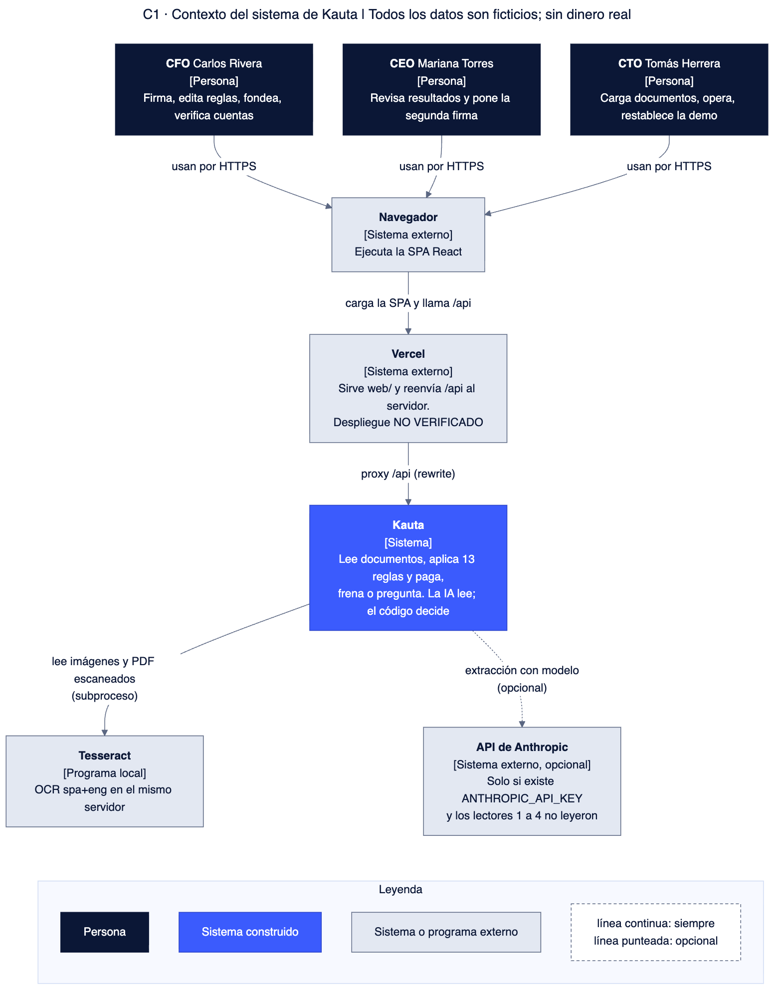
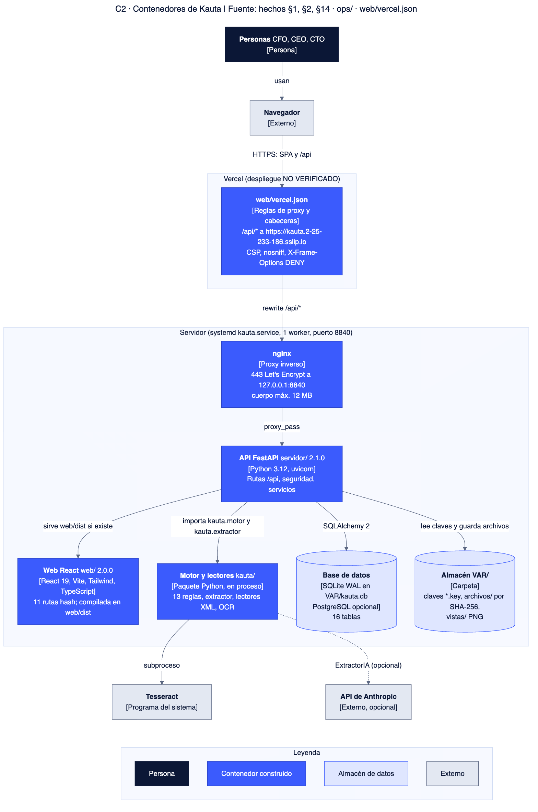
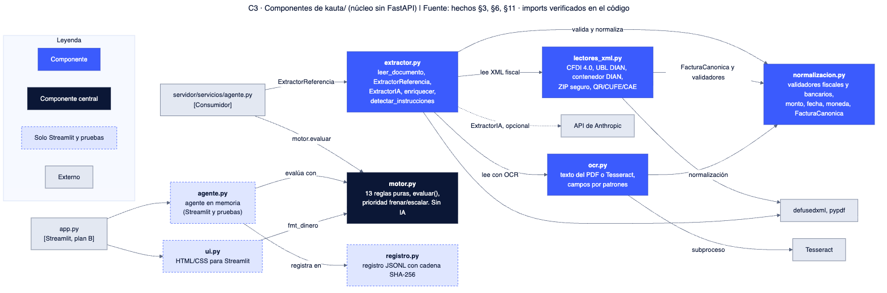
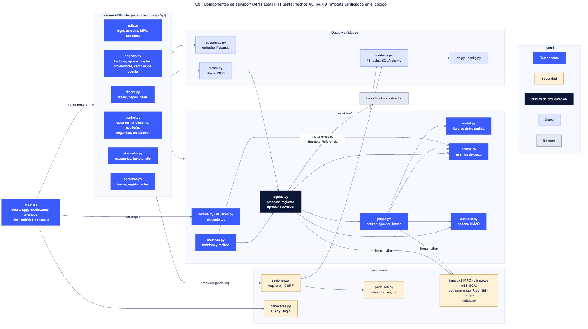
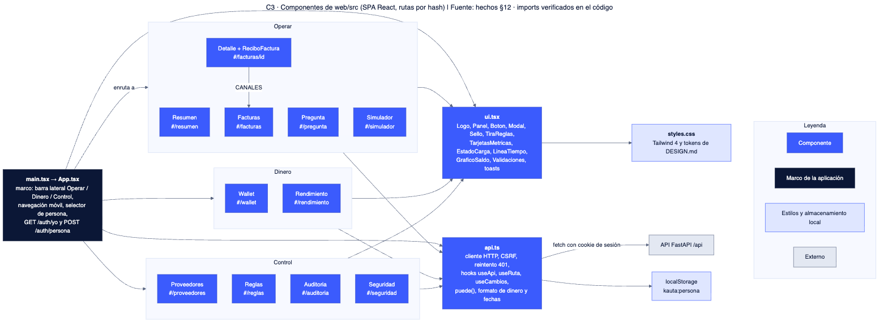
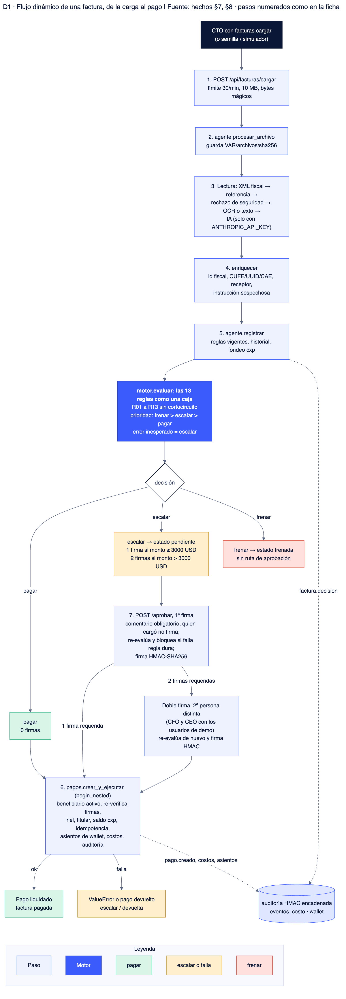

Arquitectura de Kauta
El código decide; la IA solo lee. Esta página muestra la arquitectura construida con diagramas C4, separa el objetivo de lo que existe hoy y marca lo que no está documentado. Fuente: hechos del código §1 a §17.
Problema y solución
Problema
Pagar facturas de proveedores exige leer documentos heterogéneos y detectar duplicados, cuentas cambiadas e instrucciones ocultas, sin pagar mal.
Solución
Un lector convierte el documento en datos; un motor determinista de 13 reglas decide pagar, frenar o escalar; una o dos personas firman lo escalado; cada pago deja recibo de costos y auditoría encadenada.
C1 · Contexto

C2 · Contenedores

C3 · Motor y lectores (kauta/)

C3 · Servidor (servidor/)

C3 · Web (web/src)

D1 · Flujo de una factura

Las reglas y su prioridad están en motor.py:29-46,423-451 (hechos §6).
Objetivo frente a hoy
Lo que el diseño o la documentación proponen no se presenta como hecho: la columna derecha es lo construido.
| Tema | Objetivo | Hoy (construido) |
|---|---|---|
| Entrada a la aplicación | Login con contraseña y TOTP obligatorio para aprobar en producción (modelo de seguridad documentado) | La pantalla solo tiene selector de persona sin contraseña; POST /api/auth/persona responde 404 cuando CONFIG.demo es falso y el front no tiene login (hechos §9, §17-17). El modo del servidor desplegado: NO VERIFICADO |
| TOTP | Activación desde la pantalla | Endpoints existen (auth.py:124-162); la pantalla no los llama (hechos §9) |
| Lectura de documentos | Lectura real por OCR o IA | Las 20 facturas del set se leen por tabla de referencia; OCR/IA solo para documentos nuevos con Tesseract o clave de Anthropic (hechos §11). Tokens reales de la IA: NO DOCUMENTADO |
| Auditoría y libro de solo adición | Tablas que solo reciben INSERT (modelos.py:9) | Solo lo cumple el código; sin triggers ni permisos de BD que lo impongan; restablecer las borra en demo (hechos §5) |
| Concurrencia | Presupuesto bajo concurrencia entre procesos | Candado de hilos local al proceso (BLOQUEO) y un solo worker (hechos §9, §14, §17) |
| Claves | KMS/HSM y rotación (mencionados en comentarios) | Tres claves por variable de entorno; rotación y KMS: NO ENCONTRADO (hechos §9) |
| Integración continua | Workflow de GitHub Actions (TODOS.md) | No existe (hechos §1) |
| Despliegue web | Vercel con proxy de /api al servidor | web/vercel.json existe; despliegue NO VERIFICADO (estado 2026-10-17) |
| Migraciones de BD | — | Solo create_all al arrancar; Alembic: NO DOCUMENTADO |
Seguridad
| Control | Qué hace el código | Evidencia |
|---|---|---|
| Sesión | Token de 256 bits; en BD solo su SHA-256; 30 min de inactividad, 8 h máximo | sesiones.py:30-46 |
| Cookie y CSRF | HttpOnly, SameSite=Strict; __Host- y Secure solo si el origen es https; token X-CSRF-Token en métodos que escriben | sesiones.py:44-45,78-80 |
| Origin y cabeceras | Origin verificado en escrituras; CSP estricta, nosniff, DENY, no-referrer, HSTS si https; CORS: NO ENCONTRADO | cabeceras.py:19-45 |
| Contraseñas | Argon2id, mínimo 15 caracteres; bloqueo de 15 min tras 5 intentos | contrasenas.py, auth.py:23-52 |
| Cifrado en reposo | AES-256-GCM con AAD ligada al registro (cuentas, TOTP, cambios de cuenta) | cifrado.py:25-36 |
| Firmas y auditoría | HMAC-SHA256 de cada aprobación y orden de pago, re-verificadas antes de pagar; auditoría con cadena HMAC | firma.py, auditoria.py:29-61 |
| Entradas hostiles | defusedxml sin DTD ni entidades; ZIP con límites; bytes mágicos; 10 patrones de instrucciones sospechosas (R13) | lectores_xml.py:39-43,98-107, extractor.py:38-42 |
| Límites de tasa | En memoria por proceso: login, persona, registro, carga, simulador; otras rutas sin límite | limites.py, hechos §9, §17-8 |
| Contenedor | Usuario no root, FS de solo lectura, cap_drop ALL; systemd con NoNewPrivileges y ProtectSystem | Dockerfile, ops/kauta.service:14-18 |
No existen: passkeys/WebAuthn, límite de tasa compartido entre procesos, Idempotency-Key por cabecera, WAF (hechos §9). La tabla idempotencia existe pero ninguna ruta la usa; la idempotencia real está en pagos.clave_idempotencia.
Concurrencia
- Un solo worker de uvicorn y un candado
threading.RLockglobal (servicios/__init__.py:6). - Un solo pago vivo por factura: índice único parcial en
pagos; clave de idempotencia única; reserva y pago dentro debegin_nested()(hechos §5, §7). - Varios procesos: no soportado; la documentación exige un proceso (
README.md:92).
Observabilidad
- Disponible:
/api/salud, cabeceraX-Request-ID, auditoría encadenada con exportación CSV/JSONL, verificación del libro mayor y de la cadena en/api/seguridad. - Métricas de negocio desde
/api/resumeny/api/rendimiento(hechos §10). - Registros estructurados, trazas y alertas: NO DOCUMENTADO.
Costos
Las tarifas son simuladas y declaradas (data/tarifas.json:3); no son precios de ningún proveedor. El costo se escribe en eventos_costo en la misma transacción que la acción; un costo desconocido es nulo, nunca cero.
| Concepto | Valor |
|---|---|
| IA entrada / salida | 3.0 / 15.0 USD por millón de tokens (simulado) |
| OCR | 0.0005 USD por página |
| XML y texto | 0.0 USD |
| Revisión humana | 40 USD/hora; 3 min por respuesta, 1 min por firma |
| Infraestructura | 30 USD por mes |
El camino de lectura se deduce de la extensión y la confianza, no del lector real (hechos §17-12). El costo de IA usa 1 página fija, no tokens reales.